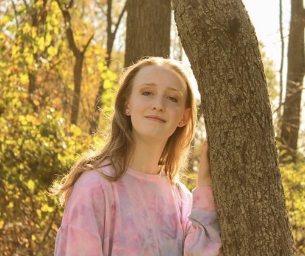

Eva Pearce-Shields
I was born April 2, 2003 in Champaign, IL. Ever since I can remember I’ve always enjoyed drawing and art. Since I was a kid I’ve enjoyed drawing, especially my favorite cartoon characters. I also enjoy drawing pictures of me and my boyfriend in different cartoon styles. I’ve always seen art as one of my best talents which is why I’m currently pursuing Graphic Design at Illinois State University. I’m set to graduate in 2027.
